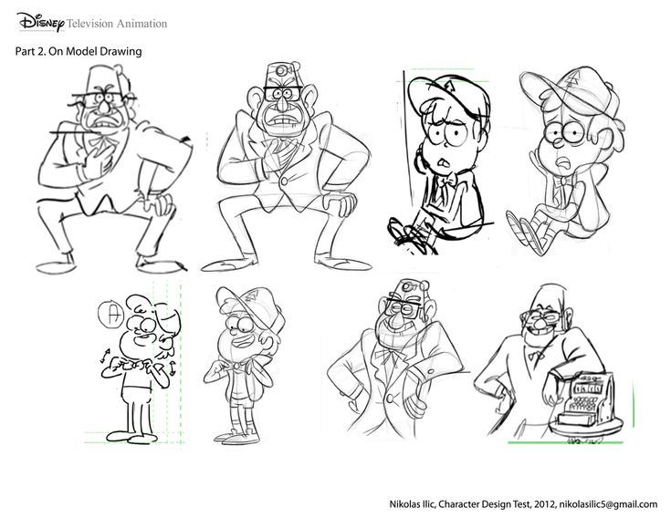
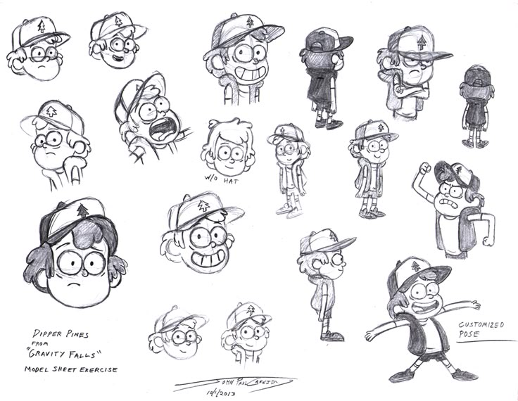

Datos de la Serie
Bocetos de Gravity Falls
 Aquí se pueden ver algunos bocetos originales de los personajes y escenas de Gravity Falls. Estos dibujos muestran cómo fueron pensados antes de llegar a la animación final.
El creador: Alex Hirsch

Alex Hirsch es el creador de Gravity Falls. Es escritor, animador y actor de voz. Creó la serie inspirándose en su propia infancia junto a su hermana gemela. Gracias a su estilo único, la serie ganó un enorme reconocimiento.